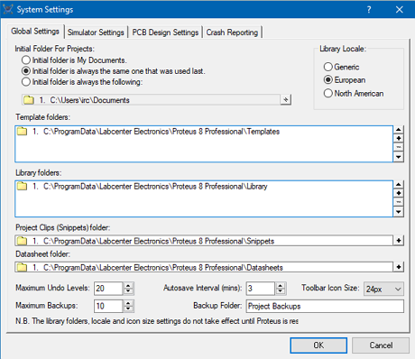
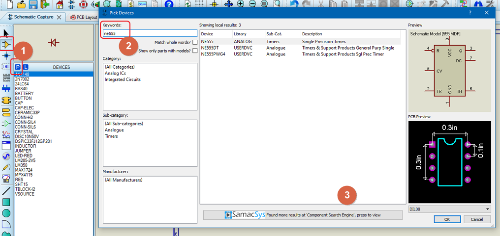
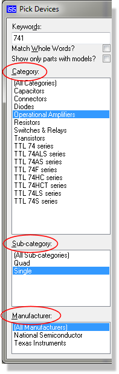
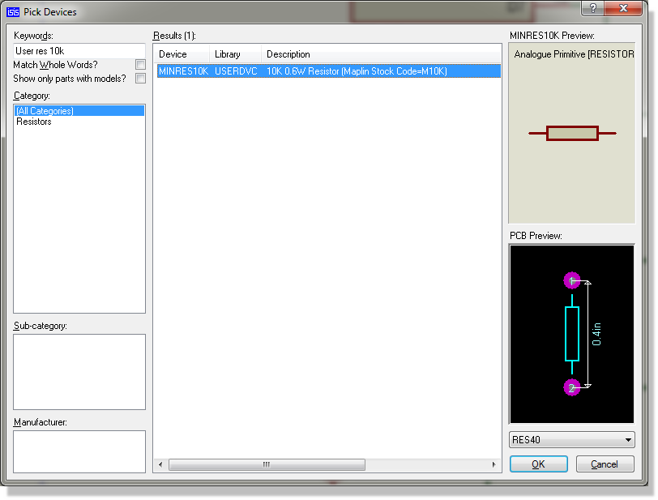
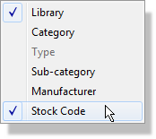
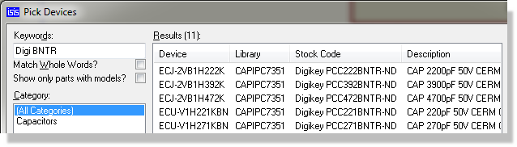

GENERAL POINTS
Library Discipline
The LIBRARY directory as installed with Proteus contains two symbol
libraries and over 120 device libraries as well as various essential utility
files. The following extensions are used :
- Library Files (.LIB)
- Index Files (.IDX)
- 3D Model Files (.VML or .3DS)
- Master Style File (.STY)
- Configuration Files (.INI).
The path to the LIBRARY directory is set by the installer to the users
ProgramData branch. You can change or add another library path from inside
the Proteus application (System Menu - System Settings command).

System Settings Dialog Form.
We would recommend that you not move your LIBRARY directory (or add
another one) unless you need to and that before making any changes you
read the following potential issues and requirements carefully :
- Three libraries, namely USERDVC.LIB, USERPKG.LIB
and USERSYM.LIB are installed read/write and intended for users to
create their own components, footprints and symbols. You can create
additional libraries if need be through library manager. All other
installed libraries are installed as read only and contain Labcenter
supplied library parts. If you make Labcenter Libraries writable then
you will lose changes to those libraries when you update your software.
Labcenter libraries are overwritten
by the installer to allow to continue to add support for new
parts.
- If you move your library folder onto a network
then it is vital that the directory is fully read/write to
all users. If Proteus cannot write the library directory it
simply will not work.
- If you elect to have more than one library folder
(e.g. one local and one network) then they must
be completely de-duped. Two libraries or files with the same
name in different places will at best result in confusion as nobody
will know which one was loaded.
- Under no
circumstances should you remove items from SYSTEM.LIB.
The Library Browser
Each part in the device libraries is assigned a Category, a Sub-Category
and a textual Description. This information is displayed by the Library
Browser and makes it very easy to search the libraries for the parts you
require. The library browser can be launched from the Library Menu, via
it’s keyboard shortcut (by default this is the ‘P’ button), or via the
library browser icon on the toolbar.

The Pick Devices dialogue form. First, launch the
dialogue, then type the part and finally either select from local results
or click to do a web search.
To
search the libraries for a part using keywords
- Enter keywords that describe the part into the
Keywords field. The search operates by matching the keywords against
the parts’ names, descriptions, categories and sub-categories.
- If the keyword(s) result in a lot of matches -
for example ‘741’ will match many parts in the 74 TTL libraries, you
can use the Category and Sub-Category fields to refine the search.
- Pick the part(s) you require by double clicking
them in the Results list.
If the result you want is not in the installed libraries
you can start a web search by clicking on the bar that appears at the
bottom of the pick devices form. Users with a valid USC contract have
access to over 15 miilion parts and also a free part creation service.
More information available here.
To
browse the libraries for a part by category and sub-category
- Ensure that the Keywords field is empty.
- Select the category for the type of part you are
looking for. This will cause the Sub-Category and Manufacturer lists
to show options appropriate for the chosen category.
- Select a sub-category and/or manufacturer to refine
the search further.
- If you still have a large number of results, you
can type in one or more keywords in order to further refine your search.
Often this will be a part value or voltage. For example, a search
for zener diodes will still produce a lot of result even with a specific
category - ‘Diodes’, sub-category - ‘Zener’ and manufacturer. Entering
a voltage for the description will quickly refine the search to a
small number of components.
- Pick the part(s) you require by double clicking
them in the Results list.

To
browse a specific library (e.g. USERDVC)
- Ensure that the Library option is enabled (right
click on the results list area and select from the resulting context
menu).
- Prefix the partname or description with all or
part of the library name. For example, typing ‘User res 10k’ in the
keywords field would restrict the search to the USERDVC library and
return any 10k resistors in this library.
- Pick the part(s) you require by double clicking
them in the Results list.

To
search for a part by stockcode
- Ensure that the Stockcode option is enabled (right
click on the results list area and select from the resulting context
menu).

- Prefix the partname or description with all or
part of the vendor name. For example, typing ‘digi BNTR’ in the keywords
field would filter the search to digikey stockcodes in the libraries
and return any partial or exact matches. The pre-supplied libraries
contain only digikey stockcodes where appropriate although you may
of course add other vendors to your own libraries.

- Pick the part(s) you require by double clicking
them in the Results list.
The crucial point to understand is that only enabled columns in the
results list are searched when you enter keywords. This means that in
order to filter results in the keywords search you must first ensure that
the relevant fields are enabled. To do this, simply right click in the
results area of the dialogue form and select the field(s) from the resulting
context menu,
Other points of note regarding the keyword search include:
- If you enter several keywords, they must all be matched against
a part for that part to show in the results. In other words, it is
implicitly an AND search.
- If a keyword is purely numeric, then it will be matched against
just the digits contained in any part name. So ‘7400’ will match ‘7400’,
‘74LS00’, ‘74HC00’ and so on.
- If a keyword can be evaluated as a number, then it will compared
numerically against any part values found in the description. So ‘1500’
will match ‘1k5’ and vice versa. This means that you can enter ‘res
2k2’ in order to find 2k2 resistors, or ‘zener 4.7’ to find 4.7V zener
diodes. Please note that you should not enter trailing units as in
‘4.7V’ as this will disable the numeric matching function.
- If a keyword matches a part value exactly, then that part will
be automatically highlighted automatically in the results. This facilitates
quick picking of parts whose name you already know. Pressing TAB and
then ENTER will pick the part into the design and close the form.
- If a keyword contains wildcard characters ‘*’ or ‘?’, then a wildcard
based comparison will be made against the part name.
- Unless you check the Match Whole Words checkbox, then partial matches
are allowed, so ‘RES’ will match ‘RESISTOR’ and so on. This is useful
in cases where a keyword gives a lot false positives. For example,
a search for ‘or gates’ will turn up a lot of spurious matches because
the pattern ‘or’ appears in many phrases such as ‘open collectOR’.
You can resize and position the pick form window and then
save its position via the Save Window Position command on Windows ‘system’
menu (click on button on the far left of the window’s title bar).
Libraries from earlier versions of Proteus
Existing user device libraries from versions of Proteus prior to 6.5
will not contain category and sub-category information. Parts from these
libraries will appear under the Unspecified category, and the library
names will be used for the sub-categories.
Please refer to Library
Indexing for details of how to index your own libraries.
Updating the
Schematic from the Libraries
If you pick a device or symbol that is already loaded into the schematic,
Proteus will update it from the libraries on disk.
Note also:
- Where devices are concerned, the replacement algorithm will match
pin positions or pin names, so connectivity will be maintained even
if you move or renumber a devices pins.
- Where a there are two or more devices or symbols with the same
name spread across several libraries, the Pick command will load the
newest one. This is particularly helpful if you have changed one of
our parts and put in USERDVC.LIB, since your version will be deemed
newer than ours.
See the section Basic
Schematic Entry in the tutorial for details of how to pick parts using
the library pick forms.